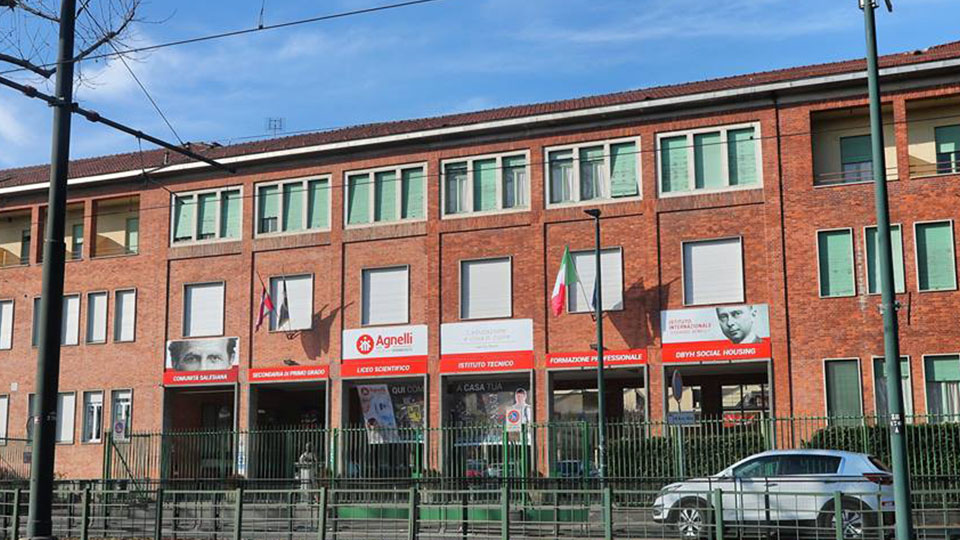
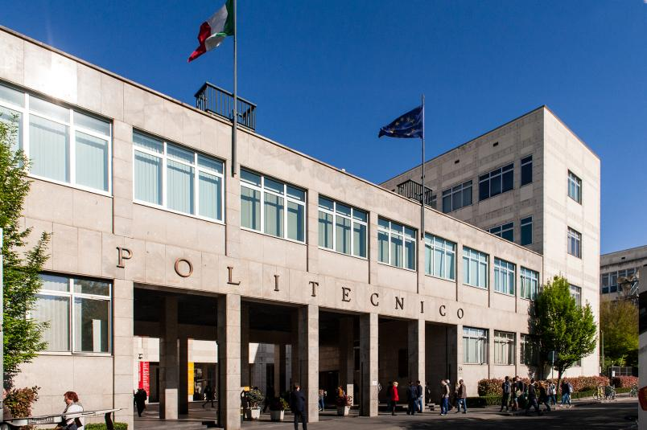

| HOME |
| SVILUPPO COMPETENZE |
| CAPOLAVORO |
| EDUCAZIONE CIVICA |
Io sono Matteo Carraro, attualmente ho 16 anni e sono nato il 14 Ottobre 2009. Studio presso l'istuto tecnico "Edoardo Agnelli" di Torino (TO), ho appena incominciato il triennio e ho scelto la specializzazione in informatica. Nel tempo libero guardo film e serie tv, gioco ai videogiochi evado in palestra
Ho scelto l'istuto Agnelli perchè offre una preparazione completa riguardante l'Informatica ed è fra i migliori istituti tecnici di Torino. Inoltre la materia informatica mi è da sempre piaciuta fin da quando facevo l'elementari.

